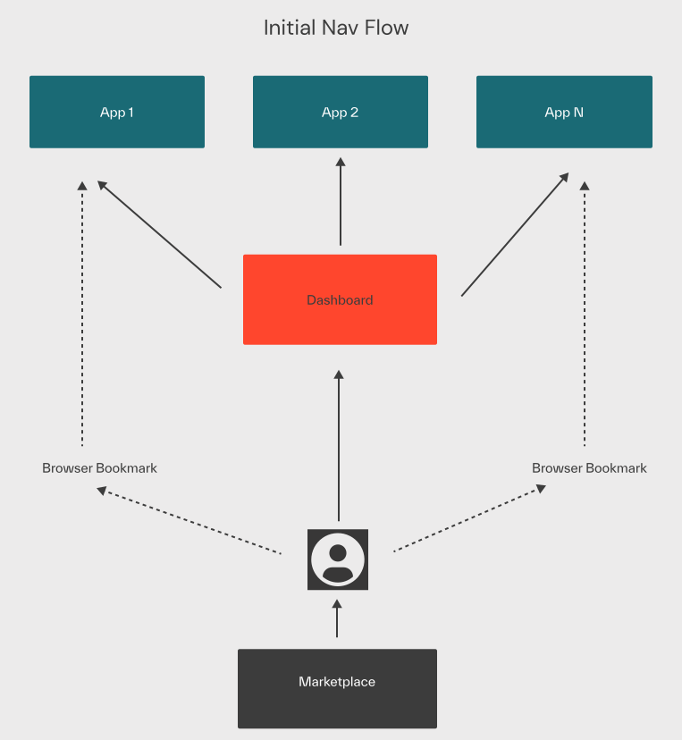
The
Problem
Kyndryl Bridge is not one product. Its applications run independently on shared accounts, identity and permissions, and each had built its own navigation with no shared design language.
Some navigations had grown organically, stacking new items as features arrived. The result was duplicate offerings inside the same app, others almost nobody used, and users struggling to move across the platform's tools.
Research
As Kyndryl Bridge moved to the new Shidōka design system, I led a design audit of the platform: a heuristic evaluation, the journeys people actually took between applications, and the information architecture behind them.
What I found reframed the brief. Features were not hard to find inside any one app; nothing told users where they were in the larger system, or how to reach the other tools they already had access to. The platform needed one unified navigation pattern, and the audit made that case clearly.
The
Decision
- Fix the structure firstI restructured the information architecture of the whole platform: I defined its depth levels and proposed merging duplicated offerings, so the navigation would carry a clean structure instead of the clutter that had piled up.
- One pattern, global and localI stopped treating navigation as something each application owned and made it one pattern for all of Kyndryl Bridge. The global layer handles switching between applications, context, notifications and account state; the same pattern defines the local navigation inside each application.
- A cap of three levelsLocal navigation stops at three nesting levels, and anything deeper moves into breadcrumbs inside the content, so no application can grow a menu complex enough to disorient the people using it.
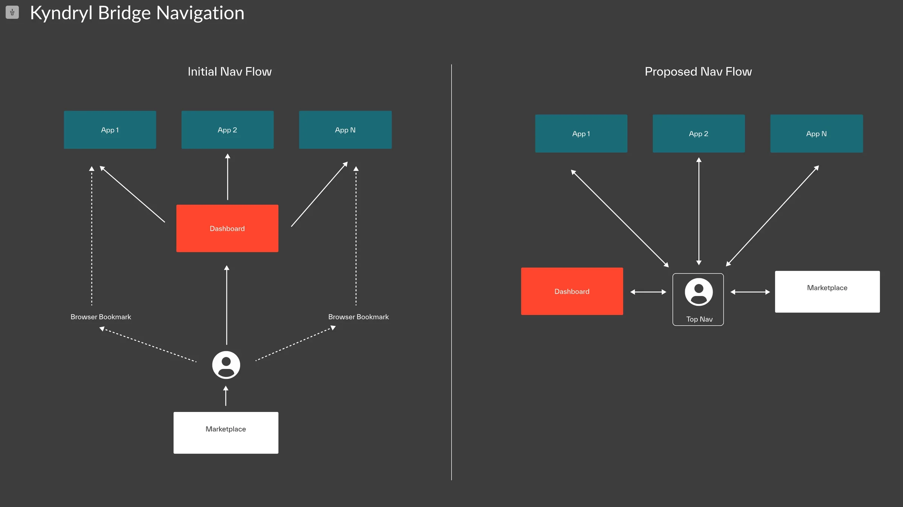
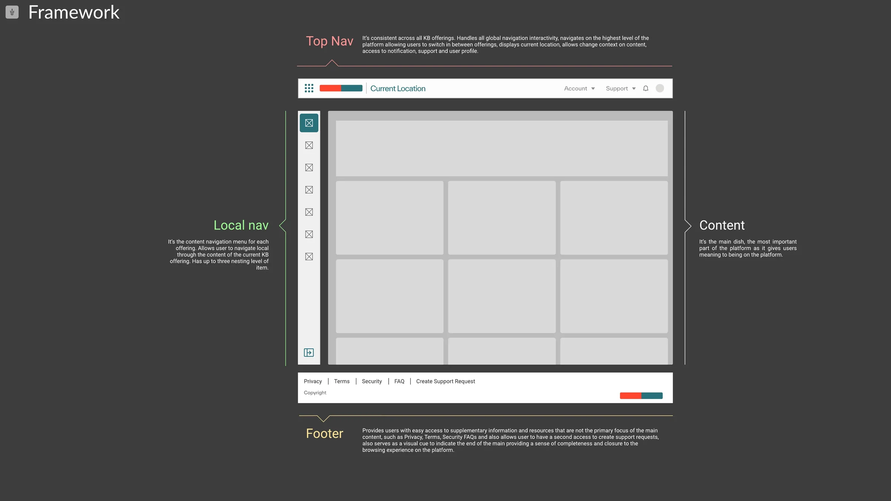
One Shared
Layer
High fidelity Figma prototypes simulated routing, context switching and permission aware states before any production code. Once unmoderated user testing validated them, development teams shipped the pattern as one React component that every application across Kyndryl Bridge consumes.
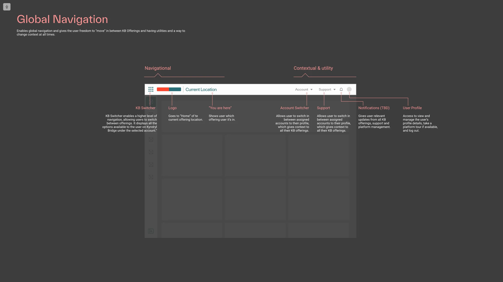
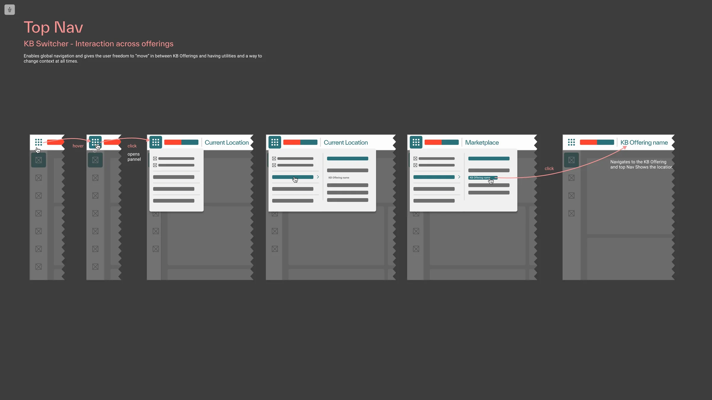
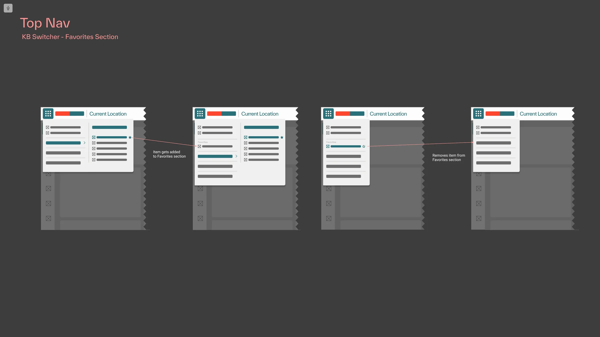
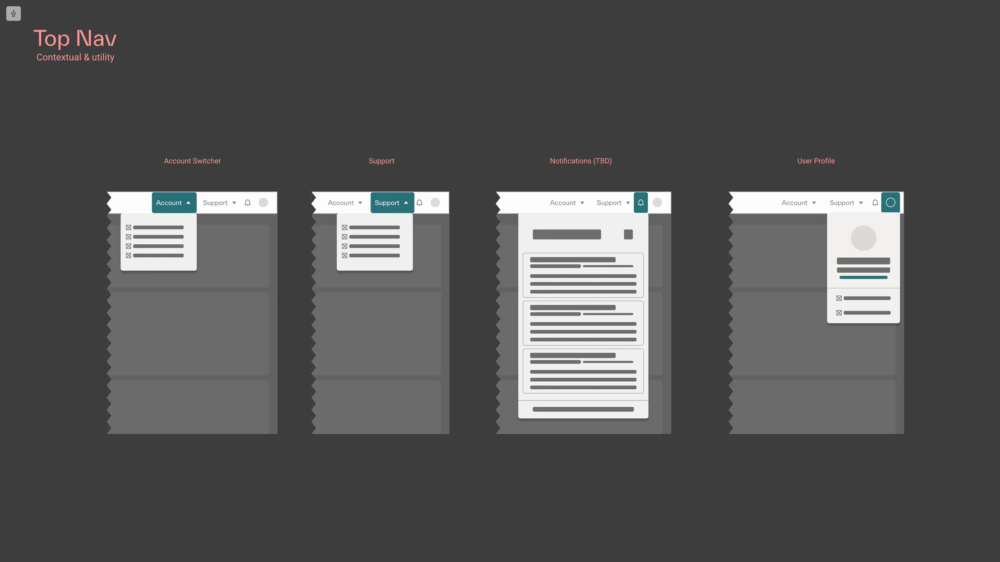
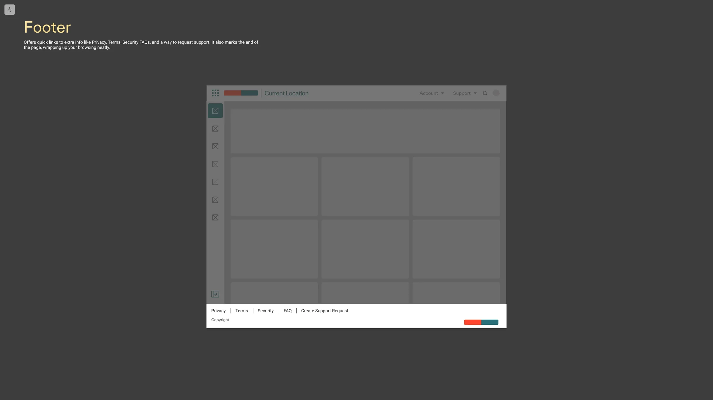
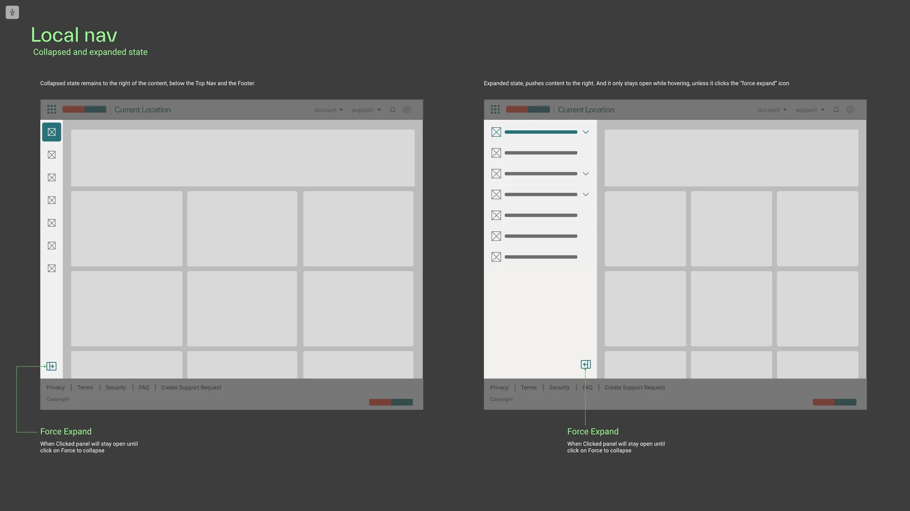
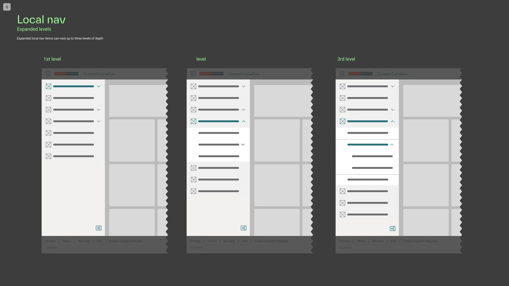
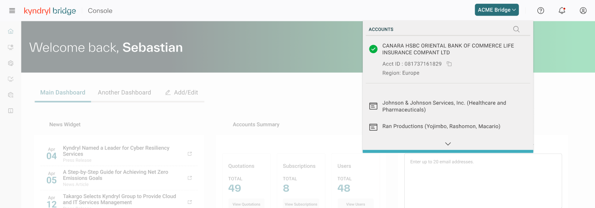
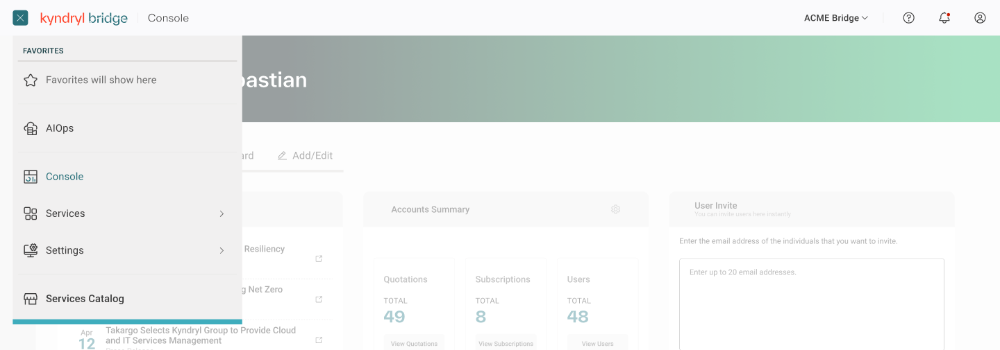
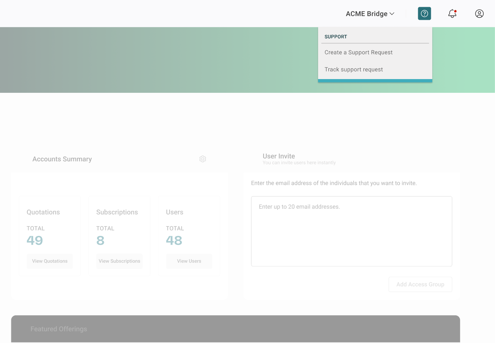
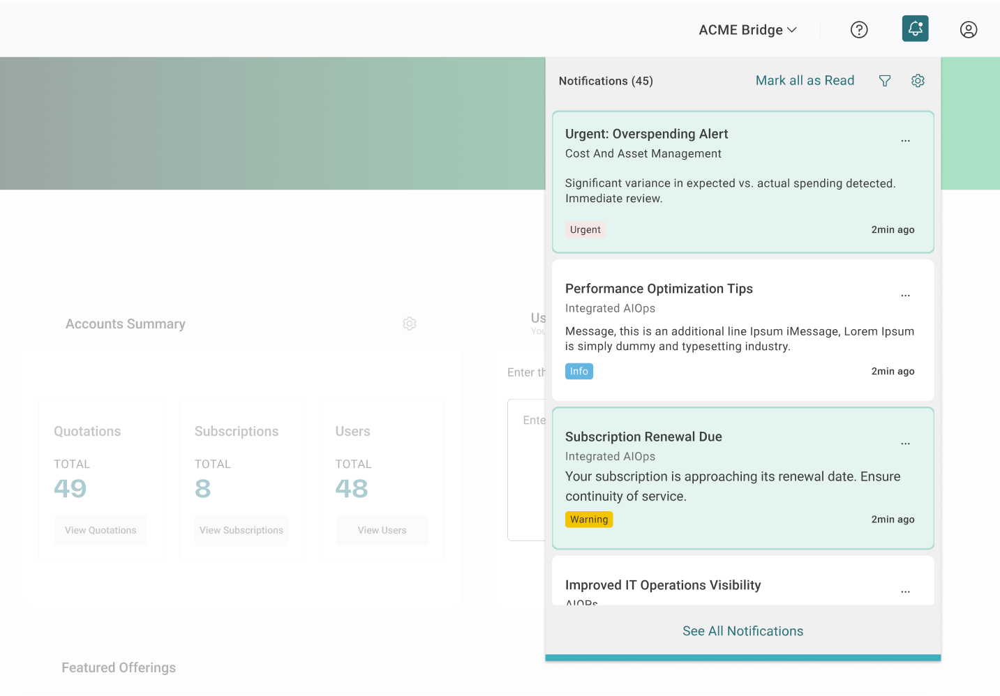
Looking
Back
What went well?
Built with engineering from day oneClose alignment with development teams kept the designs feasible and let them scale as reusable React components.
A framework that scalesThe standardized navigation supports future application integrations and third party tools.
Easier to reach the right toolThe global app switcher and utility dock cut friction: task completion rose 25% and cross app traffic to previously hidden tools rose 65%.
What would I do differently?
Test the edge cases earlierMy testing validated the primary workflows. I would have widened the unmoderated testing earlier in prototyping to cover complex, multi tenant permission states.